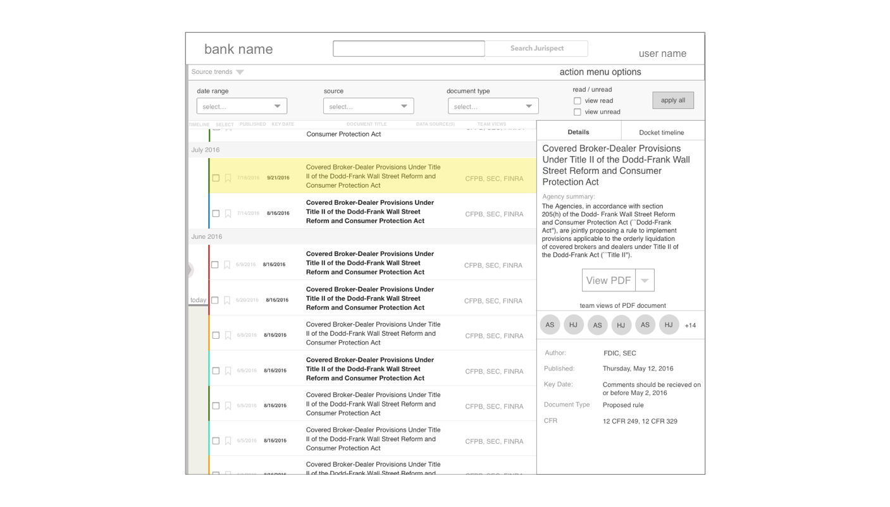

Jurispect helps make financial regulations more actionable for bank compliance teams. To understand the problem space, we conducted 24 listening sessions with relevant professionals and experts. We facilitated a workshop where the team helped to synthesize findings into four measurable UX principles. These principles were later heuristics for testing.
team persona: We organized the tasks for each role along a 9-step organizational compliance process using Stickies.io and later mural.ly.
Note: I've blurred these artifacts to protect of IP of the company.

scenarios: We focused our initial prototype on a core set of functionality in the organizational process. We selected three scenarios from this portion of the team persona to illustrate and clarify user goals.

task analysis: With the three scenarios in mind, we broke down each into discrete steps.

We went through several design iterations after each testing sessions. We started out combining users flows into a site map. We sketched wireframes individually and in a team workshop. Based on the client feedback of sketched wireframes, I used Sketch to prototype a medium fidelity prototype for user testing.
user flows: We broke each task analysis down into a user flow.
Note: I've blurred these artifacts to protect of IP of the company.

site map: We combined the user flows into a site map.
wireframe sketches: We sketched on paper and whiteboard, individually and in workshop, to define the best interface to support the user goals.
workshop to discuss sketched designs: We compared the pros and cons of three sets of sketched wireframes for each scenario.
medium fidelity mockups: After showing sketches to the client, we create a prototype using Sketch and InVision.
Despite the barriers to accessing users in large, formal organizations, we gained initial feedback on three sets of sketches. We tested the medium fidelity prototype in several remote and in-person testing sessions.